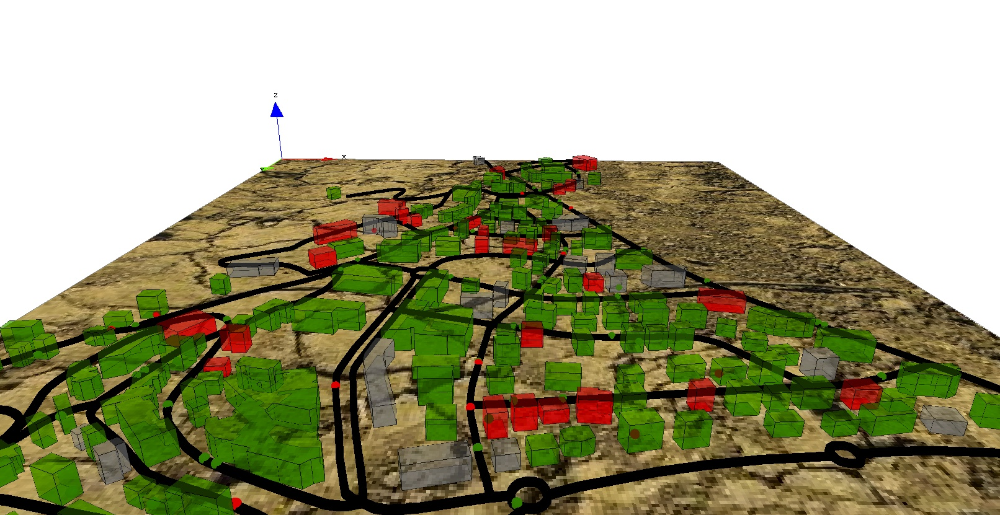

7. Differential Equations
This step Illustrates how to use differential equations
Formulation
We are interested by the spreading of the disease inside the buildings. In order to model it, we will use differential equations. So, we will need to:
- add two global variables to define the building epidemic properties (beta and h).
- add new variables for the buildings (I, S, T, t, I_to_1);
- define differential equations for disease spreading inside buildings
- add a behavior for buildings for the spreading of the disease.

Model Definition
global variables
We define two new global variables that will be used disease spreading dynamic inside the buildings.
global {
...
float beta <- 0.01;
float h<-0.1;
...
}
building
In order to define the disease spreading dynamic, we define several variables that will be used by the differential equations:
- I : float, number of people infected in the building
- S : float, number of people not infected in the building
- T : float, total number of people in the building
- t : float, current time
- I_to1 : float, remaining number of people infected (float number lower between 0 and 1 according to the differential equations).
species building {
....
float I;
float S;
float T;
float t;
float I_to1;
...
}
Then, we define the differential equations that will use for the disease spreading dynamic. Note that to define a differential equation system we use the block equation + name. These equations are the classic ones used by SI mathematical models.
species building {
....
equation SI{
diff(S,t) = (- beta * S * I / T) ;
diff(I,t) = ( beta * S * I / T) ;
}
...
}
At last, we define a new reflex for the building called epidemic that will be activated only when there is someone inside the building. This reflex first compute the number of people inside the building (T), then the number of not infected people (S) and finally the number of infected ones (I).
If there is at least one people infected and one people not infected, the differential equations is integrated (according to the discretisation step value h) with the method Runge-Kutta 4 to compute the new value of infected people. We then sum the old value of I_to_1 with the number of people newly infected (this value is a float and not an integer). Finally, we cast this value as an integer, ask the corresponding number of not infected people to become infected, and decrement this integer value to I_to1.
species building {
....
reflex epidemic when: not empty(members){
T <- float(length(members));
list<people_in_building> S_members <- list<people_in_building>(members where not (people_in_building(each).is_infected));
S <- float(length(S_members));
I <- T-S;
float I0 <- I;
if (I > 0 and S > 0) {
solve SI method: "rk4" step: h;
I_to1 <- I_to1 + (I - I0);
int I_int <- min([int(S),int(I_to1)]);
I_to1 <- I_to1 - I_int;
ask(I_int among S_members){
is_infected <- true;
}
}
}
...
}
Complete Model
model model7
global {
int nb_people <- 500;
float step <- 1 #minutes;
float infection_distance <- 2.0 #m;
float proba_infection <- 0.05;
int nb_infected_init <- 5;
file roads_shapefile <- file("../includes/road.shp");
file buildings_shapefile <- file("../includes/building.shp");
geometry shape <- envelope(roads_shapefile);
graph road_network;
int current_hour update: (cycle / 60) mod 24;
float staying_coeff update: 10.0 ^ (1 + min([abs(current_hour - 9), abs(current_hour - 12), abs(current_hour - 18)]));
float beta <- 0.01;
float h<-0.1;
list<people_in_building> list_people_in_buildings update: (building accumulate each.people_inside) where (not dead(each));
int nb_people_infected <- nb_infected_init update: people count (each.is_infected) + (empty(list_people_in_buildings) ? 0 : list_people_in_buildings count (each.is_infected));
int nb_people_not_infected <- nb_people - nb_infected_init update: nb_people - nb_people_infected;
bool is_night <- true update: current_hour < 7 or current_hour > 20;
float infected_rate update: nb_people_infected/nb_people;
init {
create road from: roads_shapefile;
road_network <- as_edge_graph(road);
create building from: buildings_shapefile;
create people number:nb_people {
speed <- 5.0 #km/#h;
building bd <- one_of(building);
location <- any_location_in(bd);
}
ask nb_infected_init among people {
is_infected <- true;
}
}
reflex end_simulation when: infected_rate = 1.0 {
do halt;
}
}
species people skills:[moving]{
bool is_infected <- false;
point target;
int staying_counter;
reflex move when: target != nil{
do goto target:target on: road_network;
if (location = target) {
target <- any_location_in (one_of(building));
target <- nil;
staying_counter <- 0;
}
}
reflex infect when: is_infected{
ask people at_distance infection_distance {
if flip(proba_infection) {
is_infected <- true;
}
}
}
aspect circle{
draw circle(5) color:is_infected ? #red : #green;
}
aspect sphere3D{
draw sphere(3) at: {location.x,location.y,location.z + 3} color:is_infected ? #red : #green;
}
}
species road {
geometry display_shape <- shape + 2.0;
aspect geom {
draw display_shape color: #black depth: 3.0;
}
}
species building {
float height <- 10#m + rnd(10) #m;
list<people_in_building> people_inside -> {members collect people_in_building(each)};
float I;
float S;
float T;
float t;
float I_to1;
aspect geom {
int nbI <- members count people_in_building(each).is_infected;
int nbT <- length(members);
draw shape color:nbT = 0 ? #gray : (float(nbI)/nbT > 0.5 ? #red : #green) depth: height;
}
species people_in_building parent: people schedules: [] {
}
reflex let_people_leave {
ask members as: people_in_building{
staying_counter <- staying_counter + 1;
}
list<people_in_building> leaving_people <- list<people_in_building>(members where (flip(people_in_building(each).staying_counter / staying_coeff)));
if not (empty (leaving_people)) {
release leaving_people as: people in: world returns: released_people;
ask released_people {
target <- any_location_in (one_of(building));
}
}
}
reflex let_people_enter {
list<people> entering_people <- people inside self where (each.target = nil);
if not (empty (entering_people)) {
capture entering_people as: people_in_building ;
}
}
equation SI{
diff(S,t) = (- beta * S * I / T) ;
diff(I,t) = ( beta * S * I / T) ;
}
reflex epidemic when: not empty(members){
T <- float(length(members));
list<people_in_building> S_members <- list<people_in_building>(members where not (people_in_building(each).is_infected));
S <- float(length(S_members));
I <- T-S;
float I0 <- I;
if (I > 0 and S > 0) {
solve SI method: "rk4" step: h;
I_to1 <- I_to1 + (I - I0);
int I_int <- min([int(S),int(I_to1)]);
I_to1 <- I_to1 - I_int;
ask(I_int among S_members){
is_infected <- true;
}
}
}
}
experiment main_experiment type:gui{
parameter "Infection distance" var: infection_distance;
parameter "Proba infection" var: proba_infection min: 0.0 max: 1.0;
parameter "Nb people infected at init" var: nb_infected_init ;
output {
monitor "Current hour" value: current_hour;
monitor "Infected people rate" value: infected_rate;
display map_3D type: opengl {
light 1 color:(is_night ? 50 : 255);
image "../includes/soil.jpg";
species road aspect:geom;
species people aspect:sphere3D;
species building aspect:geom transparency: 0.5;
}
display chart refresh:every(10) {
chart "Disease spreading" type: series {
data "susceptible" value: nb_people_not_infected color: #green;
data "infected" value: nb_people_infected color: #red;
}
}
}
}